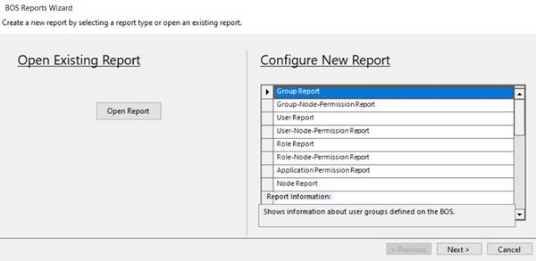

Create reports
- Launch the Connect ABT to BOS application.
- Go to Server > BOS reports.
- The BOS Reports Wizard dialog box displays.

- You can see two tabs, one for Open Existing Report and Configure New Report.
- Under the Configure New Report tab, click on each type of report to see the description of the report in the Report Information field.
- Select the type of report and click Next.
- Select the available project and click Add.
- Click Next.
- Select the user and click Add.
- Click Next.
- Select the details and sub-details.
- To save the report, click Save Report.
- Add the Report Name and Report Description and click Save.
- To create a report, click Create Report.
- The BOS Report window displays the report output.
- (Optional) Export reports, Print reports, Additional procedures.